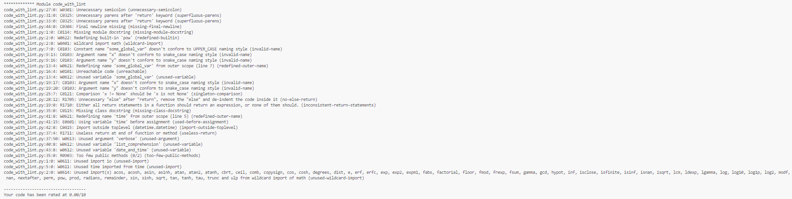
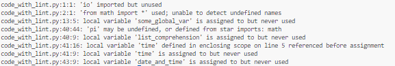
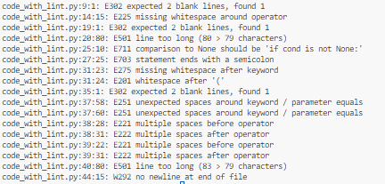
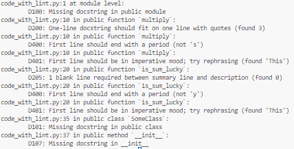

Unit 10: Artefacts
e-Portfolio Activity 1: Code Linters
Task: Run the code against a variety of linters to test code quality:
- pylint code_with_lint.py
- pyflakes code_with_lint.py
- pycodestyle code_with_lint.py
- pydocstyle code_with_lint.py
Compare the effectiveness of each tool in defining and identifying code quality. What can you conclude about the effectiveness of each approach?
Pylint
Pylint seems to be what I would like to call an “allrounder”. It not only checks for style issues that contradict the “zen” of python, but it also checks for logical errors, such as undefined or unused variables. In addition to that, it also ensures that code conforms to the PEP8 guide style. I have used pylint many times before, so I am quite familiar with this tool.
Pyflakes
Pyflakes, in comparison, is less thorough, because it does not check for adherence to style, but rather focusses on logical errors.
Pycodestyle
Pycodestyle checks that code adheres to the PEP8 style guide, something that is incorporated into pylint. It does not perform any sort of logical testing, focussing solely on style.
Pydocstyle
Pydocstyle checks whether the code adheres to the docstring conventions layed out in PEP257 as per standard configuration.
Conclusion
Based on the analysis above, it is safe to say that if one is looking to check their code for both style and logical errors, they should use ‘pylint’. If one wants to focus purely on logical errors within their code, ‘pyflakes’ can be used instead, as it is more lightweight and therefore slightly quicker than ‘pylint’, depending on the size of the code. Since ‘pylint’ includes the features of ‘pycodestyle’, I would recommend running ‘pylint’ to get the full picture. ‘Pylint’ also checks for adherence to docstring conventions, but is not as thorough as ‘pydocstyle’, which ensures that the docstrings adhere to the PEP257 guide, if not configured otherwise.
e-Portfolio Activity 2: Reflection on Software Quality
In order to compare the article written by McCall et al. (1977) to a timlier article, I selected an article titled "Aspects of software quality applied to the process of agile software development: a systematic literature review", written by Arcos-Medina & Mauricio in 2019. In an attempt to compare them effectively, I've focused on the following points:
- Quality Model: Although both articles include a model, McCall's model is focused on products, while Arcos-Medina & Mauricio focus on agile methodologies.
- Quality Attributes: In a way the article by Arcos-Medina & Mauricio expands on the early forms of quality attributes and metrics laid down by McCall, by including both internal and external metrics, heavily influenced by agile practices.
- Critical Success Factor: While the more recent article directly details these factors, McCall indirectly hints at them by his focus on product revision and transition factors.
- Agile Practices: Arcos-Medina & Mauricio's article is heavily influenced by the agile methodology, bearing a significant difference to McCall's article. This is a more modern invention, something that was not present during the time McCall wrote his article.
Conclusion: While McCall laid the groundwork for software quality metrics, Arcos-Medina & Mauricio expanded on them from an agile perspective. It is interesting to see how this methodology has influenced the way we look at software quality, as well as the metrics we use to measure them. I believe that this provides a broader range of metrics and gives us an overall more detailed understanding of software quality. This, by no means, detracts from the work done by McCall.
References
McCall, J. A., Richards, P. K., & Walters, G. F. (1977) Factors in Software Quality, Concept and Definitions of Software Quality. General Electric Company. Available from: https://apps.dtic.mil/sti/citations/ADA049014. [Accessed 13 November 2023].
Medium (2022) Software Quality Factors. Available from: https://medium.com/@gracedsitanggang/software-quality-factors-ed5b46cd7233. [Accessed 13 November 2023].
Arcos-Medina, G. & Mauricio, D. (2019) Aspects of software quality applied to the process of agile software development: a systematic literature review. International Journal of System Assurance Engineering and Management 10: 867-897. Available from: https://link.springer.com/article/10.1007/s13198-019-00840-7. [Accessed 13 November 2023].